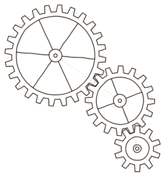

AeroHub
Simulador de voo com Arduino, projeto final de Trabalho Interdisciplinar.
Abrir no GitHubCaderno de máquinas, estudos e invenções
Belo Horizonte · Anno MMXXVI
Estudante de Ciência da Computação na PUC Minas. Programo, monto circuitos com Arduino e quero construir máquinas e sistemas para a área da saúde.

fol. 2r
Meu nome é Thiago, tenho 18 anos e estou no segundo período de Ciência da Computação na PUC Minas.
Meu objetivo profissional é me graduar em Computação e depois fazer mestrado em Engenharia Biomédica, Física Médica ou Modelagem Computacional.
Pratico natação pela AAAE PUC, a Atlética de Engenharia, faço musculação e gostaria de começar no handebol. Gosto muito de desenhar e criar personagens novos, que é como alimento minha criatividade, e no tempo livre escrevo histórias que eu mesmo crio.
fol. 3r
O que venho aprendendo na prática, dentro e fora da sala de aula.
2026 – atual
PUC Minas e projetos pessoais
Desenvolvimento de telas com HTML, CSS e JavaScript e integração com back-end para deixar as páginas dinâmicas. Coloco isso em prática no SGP, no Heroes of Health e neste portfólio.
1º e 2º períodos · 2026
PUC Minas · Algoritmos e Estruturas de Dados
Construindo lógica de programação com algoritmos e estruturas de dados em C e Java.
1º período · 2026
PUC Minas · Trabalho Interdisciplinar
Criação de protótipos interativos com Arduino, sensores e displays, do circuito no Tinkercad ao código em C++.
fol. 4
Meus projetos, divididos em dois cadernos e organizados em linhas do tempo, do mais antigo ao mais recente.
fol. 4r
Eletrônica e Arduino, feitos no Trabalho Interdisciplinar.
fol. 4v
Onde a computação encontra a saúde, a área em que quero trabalhar.
fol. 5r
Meus repositórios públicos no GitHub.
Simulador de voo com Arduino, projeto final de Trabalho Interdisciplinar.
Abrir no GitHubfol. 6r
Pinturas antigas em domínio público do Art Institute of Chicago. Escolha um tema para ver as obras.
fol. 7r
Caro leitor,
obrigado por folhear este caderno. Para ver meus projetos ou falar comigo, me encontre no GitHub ou me mande uma mensagem.
GitHub github.com/Thz002Belo Horizonte, MMXXVI.
Thiago
T